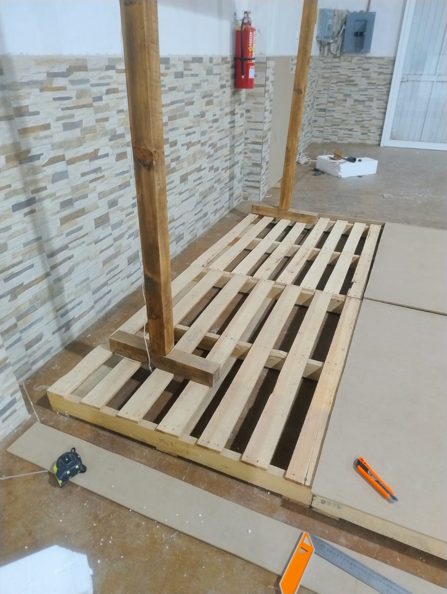
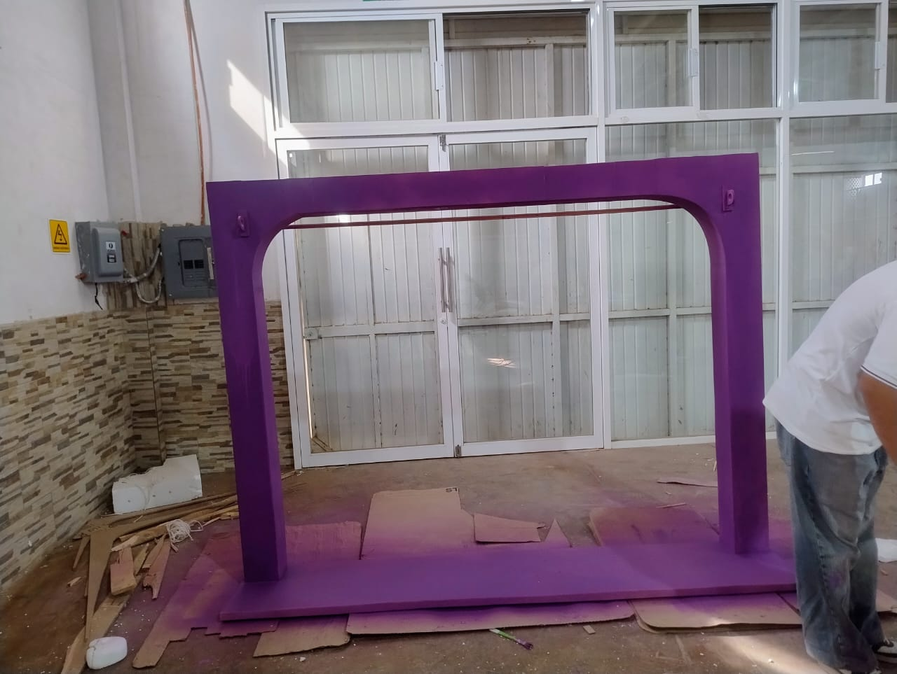
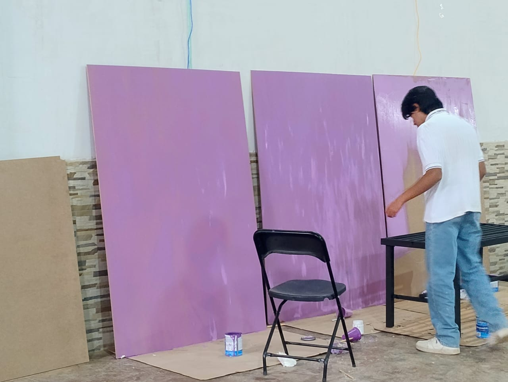
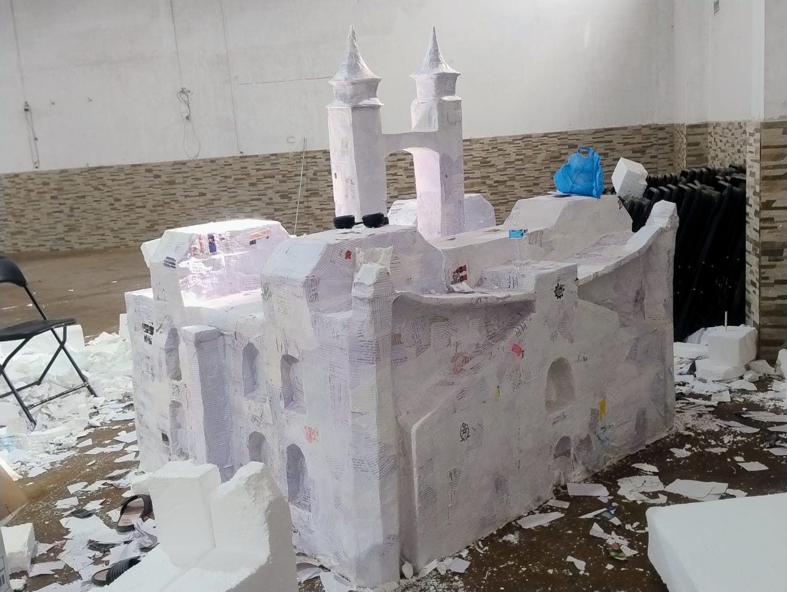
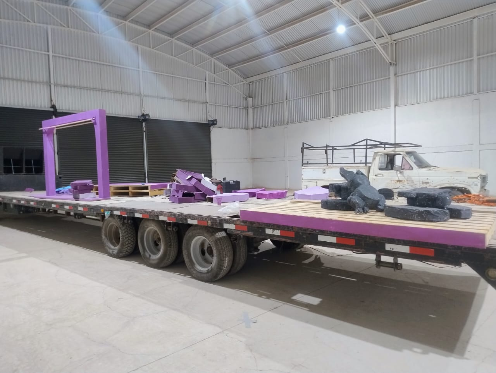
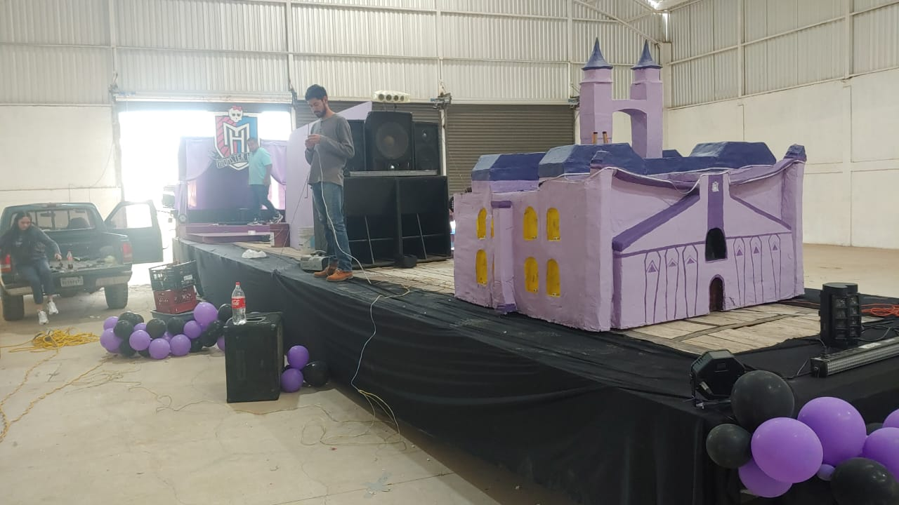
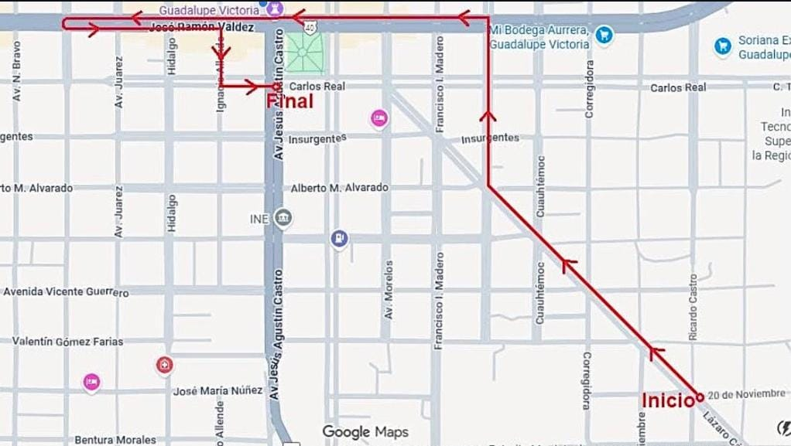
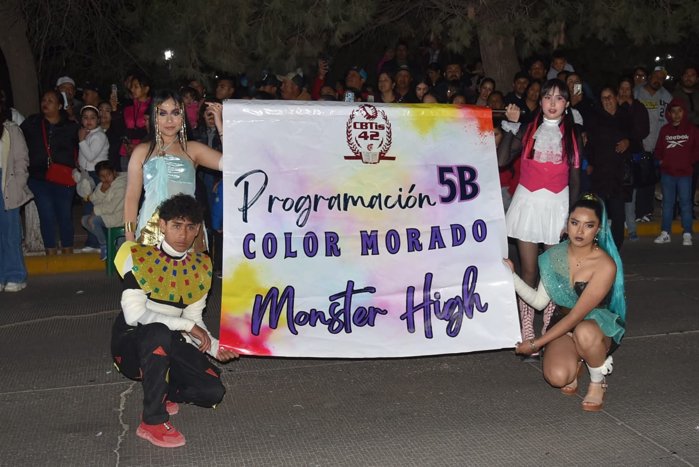

Nuestro Tema
Tras revelarse el tema del Desfile de Luces sobre "Magia Multicolor" se hizo una votación sobre los
temas a escoger del carro, en nuestro grupo se escogió el color morado, junto con el grupo de 1D. Al
escoger el Morado, entre todo el grupo se escogió la tematica exacta del desfile, optando por
hacerlo sobre la serie de "Monster High"
Con el tema de Monster High escogido y la tematica de Morado, nos organizamos para tener una idea del
dieseño de nuestro carro, destacando el color e iluminación morada así como fondos y estructuras
características de la seria de Monster High
Para aumentar la eficiencia de trabajo, dividos el grupo en 5 equipos, cada equipo de aproximadamente
de 5 integrantes, donde cada uno se organizaria para la elaboración del carro, así como se escogió a
un tesorero que manejara el dinero del grupo

01.- recaudación de dinero
En todo el grupo nos pusimos de acuerdo para la recaudación de dinero, optando por que cada equipo
conformado tenía que vender sus propios productos, y al final de la semana entregar el dinero
juntado.
Así como la venta de boletos de rifas, rifando cada ojeto posible para así recaudar más dinero
En la escuela dieron oportunidad de cada grupo vender comida, en nuestro caso optamos por vender
Gringas, cada persona se organizo para llevar ingredientes, materiales y para saber quien iba a
estar preparando y vendiendo la comida
02.- Bodega y Trailer
Se seleccionaron a algunos alumnos voluntarios para encontrar como trabajar, necesitando de una
bodega, para poder hacer las estructuras y armar el carro; Una traila para llevar las estructuras
hechas; un trailer, para trasnportar y conducir la traila; sonido, para poder poner música
relacionada a la tematica que se reproduciria durante todo el recorrido del desfile; luces, la
iluminación del carro alegorico
03.- Elaboración de las estructuras
Se empezó a trabajar en el carro alegorico, cada equipo estaba encargado de contruir las estructuras
o decoración de una parte del carro, que después reuniriamos y montariamos en la traila, durante 1
mes, nos estuvimos reuniendo en la bodega para que cada quien pudiera trabajar en sus estructuras,
llendo a la bodega todos los días, desde la mañana hasta la tarde-nocohe
Durante este proceso, se tuvo que manejar el dinero de la tesorera para comprar material que cada
equipo iba a usar, así como nos tuvimos que tranportar para ir a comprarlo y trasnportar cualquier
material ya sea pinturas o hasta madera hasta la bodega donde se trabajaria, manteniendo un ritmo de
trabajo grupal consstante




04.- Preparación antes del desfile
Los últimos 2 días antes del desfile, se empezó a armar todas las estructuras hechas, teniendo que
cargar y montar las cosas en la traila, así como terminar los últimos detalles faltantes de las
estructuras
Horas antes del desfile, se terminaron los últimos detalles, se conectaron todas las luces y bocinas
utilizadas y se preparo el trailer para salir, pero también cada persona se preparó con su vesturio,
así como nos organizamos para saber quienes iban a ir arriba del carro y quienes iban a ir caminando
detrás



